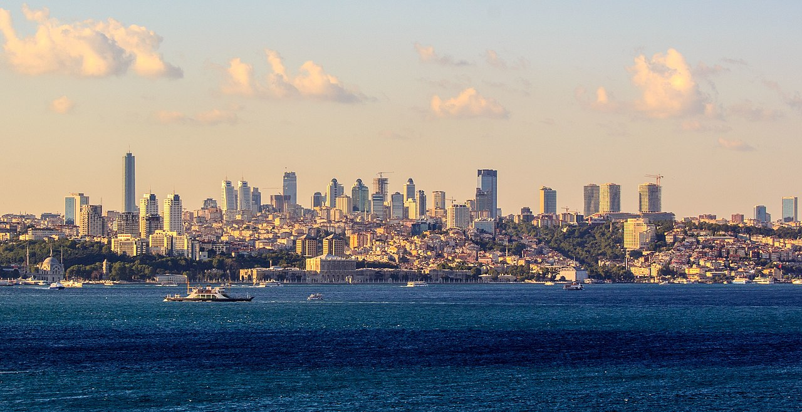
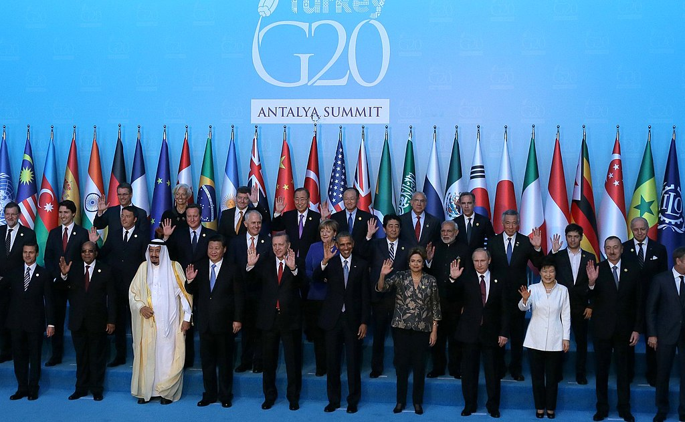
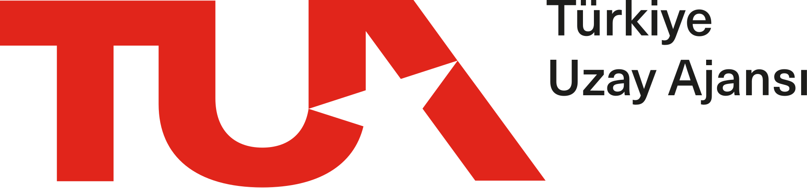
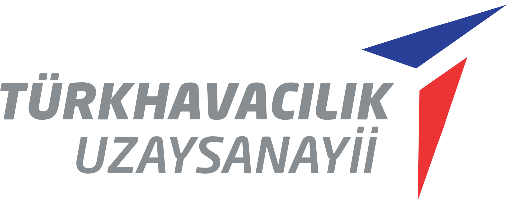

Ekonomi
Türkiye, 2021 yılında GSYİH (SAGP) sıralamasında 11. sırada ve GSYİH (nominal) sıralamasında 20. sırada yer almaktadır. OECD ile G-20 büyük ekonomileri topluluklarının kurucu üyelerinden bir tanesidir.
1995'te başlayan Avrupa Birliği-Türkiye Gümrük Birliği tarifeleriyle birlikte Türkiye'de geniş bir liberalleşme yolu açıldı ve bu gümrük birliği, ülkenin dış ticaret politikasının önemli taşlarından birini oluşturur hale geldi. Türkiye'nin 2014'te ihracatı, önceki yıla göre %4 artarak $157,6 milyar oldu. En fazla ihracat yapılan yapılan ülkeler ise Almanya, Irak, Birleşik Krallık, İtalya ve Fransa olarak belirlendi. Ancak aynı yıl ithalatın $242,2 milyarı bulması sebebiyle $84,5 milyar tutarında dış ticaret açığı oluştu. Bu rakam, bir önceki yıl $99,8 milyar idi. 2014'te Türkiye, en fazla Çin'den ithalat yaptı. Bu ülkeyi sırasıyla Almanya, Rusya ve Amerika Birleşik Devletleri takip etti.
Türkiye'nin büyük bir otomotiv sanayisi vardır. 2014 Türkiye, gemi yapımından ise $1,2 milyar gelir elde etmiştir. Ülkenin bu konudaki en büyük pazarları Malta, Norveç, Birleşik Krallık ve Marshall Adaları'dır. 2012 verilerine göre 87 aktif Türk tersanesi bulunmaktadır ve bu tersanelerde farklı boyutlarda 15 yüzer havuz ve bir kuru havuz bulunmaktadır. Tuzla, Yalova ve İzmit gemi inşa sektörünün başlıca merkezleridir.
Beko ve Vestel gibi Türk markaları, Avrupa'nın en büyük beyaz eşya ve tüketici elektroniği üretim şirketlerindendir, bu sektörleri geliştirmek ve yeni teknolojiler bulmak konusunda önemli miktarda yatırımlar yapmaktadırlar.
Türk ekonomisinin diğer önemli bölümlerini ise bankacılık, inşaat, ev aletleri, elektronik, tekstil, petrol arıtma, petrokimya ürünleri, gıda, madencilik, demir-çelik ve makine sanayi oluşturmaktadır. 2013 verilerine göre Türkiye'deki sektörel GSYİH dağılım %8,9 tarım, %27,3 sanayi ve %63,8 hizmet şeklinde olmuştur. Bu oranlara rağmen hâlâ daha nüfusun dörtte biri tarım sektöründe çalışmaktadır. 2012 verilerine göre çalışan nüfusun sadece %30'u kadınlardan oluşmaktadır ve bu rakam OECD üyesi ülkeler arasındaki en az orandır. Türkiye'de en zengin kesimin geliri, en yoksul kesimin gelirinin 7,7 katıdır. Nüfusun %15’i yoksulluk sınırının altındadır.
Türkiye, ekonomisine katkı sağlamak amacıyla 2017 yılında yatırım yoluyla vatandaşlık programını başlattı. Program 400.000 $ 'lık bir gayrimenkul yatırımı karşılığında yabancı yatırımcılara vatandaşlık alma imkanı sunuyor.
Levent iş merkezlerine ait gökdelenler. İstanbul, Türkiye ekonomisinin kalbinin attığı yerdir.
Türkiye'de yapılan 2015 G-20 Antalya zirvesindeki dünya liderleri
Tarihçe
I. Dünya Savaşı ile Türk Kurtuluş Savaşı sonrası ortaya çıkan cumhuriyetin ilk altmış yılında 1923 ve 1983 yılları arasında devlet, sıkı bir yarı-devletçi yaklaşımın içinde bulundu; özel sektör katılımı, dış ticaret, döviz akışı ve doğrudan yabancı yatırım tutarı gibi konularda çeşitli sınırlamalar konuldu. Çeşitli bütçe planlamaları yapıldı. Ancak 1983 yılına gelindiğinde Başbakan Turgut Özal, özel sektörü daha ön plana çıkaran bir dizi reform başlattı.
Büyük miktarlarda alınan dış kredilerle birlikte reformlar, hızlı bir ekonomik büyümenin önünü açtı fakat bu büyüme özellikle 1994, 1999 (o yıl gerçekleşen Gölcük depremi sonrası) ve 2001 yıllarında yaşanan finansal krizler ve durgunluklar sebebiyle sürekli kesintiye uğradı. 1981 ile 2003 yılları arasında ülkenin yıllık GSYİH büyüme ortalaması %4 olarak belirlendi. Büyüyen kamu açıkları ve yaygın yolsuzluk ile birlikte ek mali reformların eksikliği, yüksek enflasyon ve zayıf bankacılık sektörü, makroekonomi dalgalanmasının artmasına sebep oldu. 2001 yılındaki kriz sonrası dönemin maliye bakanı Kemal Derviş tarafından başlatılan reformlardan bu yana, enflasyon tek haneli rakamlara düştü, yatırımcı güveni ile yabancı yatırım arttı, işsizlik oranı geriledi.
Türkiye, dış ticaret üzerindeki devlet kontrolünü yavaş yavaş azaltarak ekonomik düzenlemeler yoluyla çeşitli pazarlar açtı, kamuya ait çeşitli kurumları özelleştirme yoluna gitti, birçok sektörün liberalleştirilmesi ile yabancı katılımı ise çeşitli siyasi tartışmalar arasında devam etti. Kamu borçlarının GSYİH'ye oranı, 2001 yılındaki durgunlukta seviyenin altına düşse de, 2010 yılının üçüncü yarısında %46'ya yükseldi. 2002 ve 2007 yılları arasındaki yıllık GSYİH büyüme oranı ise ortalama %6,8 olarak belirlendi; bu rakam Türkiye'yi o yılların en hızlı büyüyen ekonomilerinden biri haline getirdi. Ancak büyüme, 2008 yılında %1 oranında yavaşladı ve ekonomi, 2009 yılında yaşanan küresel ekonomik krizden %5 kadarlık bir oranla durgunluktan etkilendi. 2010 yılında ise ülkenin ekonomisinin %8 büyüdüğü tahmin edildi.
2000'lerin ilk yıllarında ülkedeki yüksek enflasyon kontrol altına alındı ve bu yeni bir para biriminin piyasaya sunulmasına yol açtı; Yeni Türk Lirası, 1 Ocak 2005 tarihinde yürürlüğe girdi. 1 Ocak 2009'da yeni Türk Lirası, yerini yeni banknot ve madeni paraların tanıtılmasıyla Türk Lirası'na bıraktı. 2012 yılında ülkedeki enflasyon rakamı %6,16, işsizlik oranı ise %9,2 olarak belirlendi.
Turizm
Türkiye'de turizm, ekonominin önemli bir kısmını teşkil etmektedir ve son yirmi yılda hızlı bir büyüme yakalamıştır. 2018'de 46 milyon turist tarafından ziyaret edilen Türkiye, Dünyanın 6., Avrupa'nın 4. en büyük turizm destinasyonu olarak yer aldı ve ziyaretçilerden 25.2 milyar dolar gelir elde etti.
Altyapı
Türkiye, 2021 senesinde kazandığı yaklaşık 815 milyar Amerikan doları GSYİH ile dünyanın en büyük 19. ekonomisi, Avrupa'nın ise en büyük 7. ekonomisi seçilmiştir. 2013 yılında Türkiye'de 22 uluslararası havalimanı olmak üzere 98 havalimanı vardı. İstanbul Havalimanı'nın yılda 150 milyon yolcuya hizmet verme kapasitesiyle dünyanın en büyük havalimanı olması planlanıyor. 1933'ten bu yana Türkiye'nin bayrak taşıyıcı havayolu olan Türk Hava Yolları'nın yanı sıra ülkede birçok havayolu şirketi faaliyet göstermektedir. Avrupa, Asya, Afrika ve Amerika'da 315 noktaya tarifeli seferler gerçekleştiriyor ve bu da onu Dünyanın en çok yere sefer yapan havayolu firması yapıyor. Türk Hava Yolları ana aktarma merkezi olarak 90 milyon kapasiteli İstanbul Havalimanı'nı kullanıyor.
2014 itibariyle, ülke 65.000 kilometrenin (40.400 mil) üzerinde bir karayolu ağına sahiptir. Otoyollar, resmi adı Otoyol olan kontrollü erişimli otoyollardır. Ağ, 2020 itibariyle 3.523 kilometre (2.189 mi) genişliğindedir. Ağın 2023 yılına kadar 4.773 kilometreye (2.966 mi) ve 2035 yılına kadar 9.312 kilometreye (5.786 mi) genişlemesi bekleniyor.
Türkiye Cumhuriyeti Devlet Demiryolları, 12.532 kilometre ray uzunluğu üzerinde hem konvansiyonel hem de yüksek hızlı tren işletmektedir. Devlete ait ulusal demiryolu şirketi 2003 yılında hızlı tren hatları inşa etmeye başladı. Ankara-Konya hattı 2011 yılında, Ankara-İstanbul hattı ise 2014 yılında hizmete girdi. Konya-Karaman hattı 2022 yılında faaliyete geçti. ve 406 km (252 mil) uzunluğundaki Ankara-Sivas hattı 2022'de açılacak.
2013 yılında hizmete açılan Boğaziçi'nin altındaki Marmaray tüneli, İstanbul'un Avrupa ve Asya yakasındaki demiryolu ve metro hatlarını birbirine bağlar; yakındaki Avrasya Tüneli (2016) ise motorlu taşıtlar için denizaltı bağlantısı sağlıyor.
Metro İstanbul, yıllık 495 milyon yolcu sayısı ile ülkedeki en büyük metro ağıdır. Hizmette olan 8 metro hattı ve yapım aşamasında olan 5 metro hattı daha var.
15 Temmuz Şehitler Köprüsü (1973), Fatih Sultan Mehmet Köprüsü (1988) ve Yavuz Sultan Selim Köprüsü (2016), İstanbul Boğazı'nın Avrupa ve Asya kıyılarını birbirine bağlayan üç asma köprüdür. Osmangazi Köprüsü (2016) İzmit Körfezi'nin kuzey ve güney kıyılarını birbirine bağlar. Avrupa ve Asya'yı birbirine bağlayan Çanakkale Boğazı üzerindeki 1915 Çanakkale Köprüsü, dünyanın en uzun asma köprüsüdür.
Birçok doğal gaz boru hattı ülke topraklarını kapsıyor. Karadeniz'in önemli bir doğalgaz boru hattı olan Mavi Akım, Rusya'dan Türkiye'ye doğal gaz taşıyor. Yıllık kapasitesi yaklaşık 63 milyar metreküp (2.200 milyar fit küp) olan denizaltı boru hattı Türk Akımı, Türkiye'nin Rus gazını Avrupa'nın geri kalanına satmasına olanak tanıyor. Dünyanın en uzun ikinci petrol boru hattı olan Bakü-Tiflis-Ceyhan petrol boru hattı 2005 yılında açıldı. 2018 itibariyle Türkiye 1700 terawatt saat (TW/h) petrol tüketiyor. yılda birincil enerji, kişi başına 20 megavat saatin (MW/h) biraz üzerinde. Türkiye'nin enerji politikası fosil yakıt ithalatını azaltmayı içermesine rağmen, Türkiye'deki kömür, Türkiye'nin sera gazı emisyonlarının küresel toplamın %1'ini oluşturmasının en büyük tek nedenidir. Türkiye'de yenilenebilir enerji artırılıyor ve Akkuyu Nükleer Santrali Akdeniz kıyısında inşa ediliyor : ancak ulusal elektrik üretim kapasitesi fazlalığına rağmen fosil yakıtlar hala sübvanse ediliyor. Türkiye, dünyadaki jeotermal enerjiden en yüksek beşinci doğrudan kullanım ve kapasiteye sahiptir.
2019 yılı itibarıyla Türkiye elektriğinin %45,6'sını yenilenebilir kaynaklardan üretmektedir.
Bilim ve teknoloji
TÜBİTAK, Türkiye'de bilim, teknoloji ve inovasyon politikalarını geliştiren lider kuruluştur. TÜBA, Türkiye'de bilimsel faaliyetleri teşvik etmek için hareket eden özerk bir bilimsel topluluktur. TAEK, Türkiye'nin resmî nükleer enerji kuruluşudur. Hedefleri arasında nükleer enerji üzerine akademik araştırmalar yapmak ve barışçıl nükleer araçların geliştirilmesi ve kullanımı yer alıyor.
Askerî teknoloji alanında araştırma ve geliştirme amacıyla kurulan devlet şirketleri arasında TUSAŞ, ASELSAN, HAVELSAN, ROKETSAN ve MKE bulunmaktadır. Türkiye Uzay Sistemleri Entegrasyon ve Test Merkezi (USET), Millî Savunma Bakanlığı'na ait ve Türk Havacılık ve Uzay Sanayii (TUSAŞ) tarafından işletilen bir uzay aracı üretim ve test tesisidir. Uydu Fırlatma Sistemi (UFS), Türkiye'nin uydu fırlatma kabiliyetini geliştirmeye yönelik bir projedir. Proje bir uzay üssünün inşasından, uydu fırlatma araçlarının geliştirilmesinden ve yer istasyonlarının kurulmasından oluşur. Türksat, Türkiye'deki tek haberleşme uydusu operatörüdür ve Türksat uydu serisini yörüngeye fırlatmıştır. Göktürk-1, Göktürk-2 ve Göktürk-3, Millî Savunma Bakanlığı tarafından işletilen Türkiye'nin keşif amaçlı yer gözlem uydularıdır. BİLSAT ve RASAT, TÜBİTAK Uzay Teknolojileri Araştırma Enstitüsü tarafından işletilen Dünya gözlem uydularıdır.
2015 yılında Kuzey Carolina Üniversitesi'nde bir profesör olan Aziz Sancar, hücrelerin DNA'yı nasıl onardığı konusundaki çalışmaları nedeniyle Tomas Lindahl ve Paul Modrich ile birlikte Nobel Kimya Ödülü'nü kazandı. Diğer Türk bilim adamları arasında Behçet hastalığını keşfeden hekim Hulusi Behçet ve Arf değişmezini tanımlayan matematikçi Cahit Arf yer alıyor.
Türkiye, 2022 Yılı Cumhurbaşkanlığı Yıllık Programı'nda yer alan bilgilere göre, 2022 yılı itibarıyla blockchain tabanlı Merkez Bankası Dijital Parası (CBDC) olan Dijital Lira’yı resmi olarak hayata geçirmeyi planlıyor.
Türkiye Uzay Ajansı.
TUSAŞ, havacılık ve savunma sektöründe dünyada ilk 100 kurum arasında yer alıyor.
